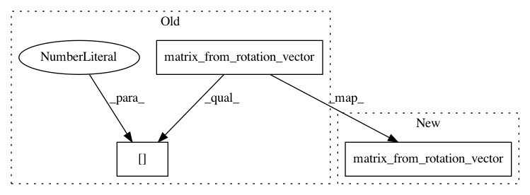

0947bb7119ba0a505a29fcc72e1ba23985217b28,tests/test_exponential_barycenter.py,TestExponentialBarycenter,test_coincides_with_frechet_so,#TestExponentialBarycenter#,123
Before Change
vector_point = so_vector.rotation_vector_from_matrix(point)
frechet_estimator.fit(vector_point)
mean = frechet_estimator.estimate_
expected = so_vector.matrix_from_rotation_vector(mean)[0]
self.assertAllClose(result, expected)
@geomstats.tests.np_only
def test_estimate_weights(self):
After Change
frechet_estimator.fit(vector_point)
mean = frechet_estimator.estimate_
expected = so_vector.matrix_from_rotation_vector(mean)
result = estimator.estimate_
self.assertAllClose(result, expected)
@geomstats.tests.np_only
In pattern: SUPERPATTERN
Frequency: 3
Non-data size: 3
Instances
Project Name: geomstats/geomstats
Commit Name: 0947bb7119ba0a505a29fcc72e1ba23985217b28
Time: 2020-04-17
Author: ninamio78@gmail.com
File Name: tests/test_exponential_barycenter.py
Class Name: TestExponentialBarycenter
Method Name: test_coincides_with_frechet_so
Project Name: geomstats/geomstats
Commit Name: a0d29add820ab6ce09f105c3615ad717b1c83c6e
Time: 2020-04-17
Author: ninamio78@gmail.com
File Name: tests/test_exponential_barycenter.py
Class Name: TestExponentialBarycenter
Method Name: test_coincides_with_frechet_so
Project Name: geomstats/geomstats
Commit Name: cb8762a3100c5f67047843159185059390ee3c6c
Time: 2020-04-16
Author: ninamio78@gmail.com
File Name: tests/test_exponential_barycenter.py
Class Name: TestExponentialBarycenter
Method Name: test_coincides_with_frechet_so